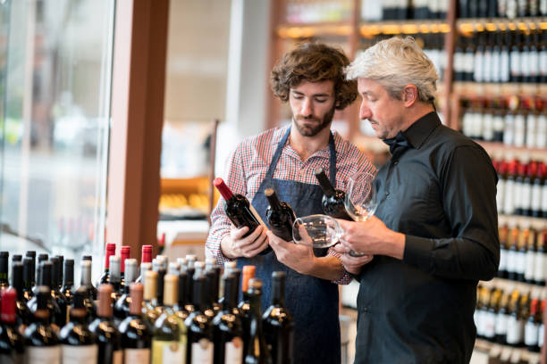
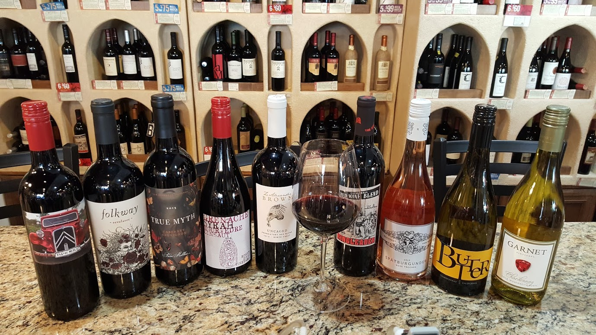

Diferenciais

Consultoria de vinho
Todos os vendedores são profundos conhecedores de vinhos, e usam esse conhecimento no atendimento dos clientes, que sempre demandam informações, recomendações e dicas. Similar a uma consultoria, é um dos pontos fortes da vinheria.

Seleção de Rótulos
Cada garrafa é escolhida com atenção para garantir qualidade e autenticidade. Trabalhamos com vinícolas premiadas e pequenos produtores artesanais, oferecendo rótulos que você não encontra facilmente no mercado. Damos exclusividade e descobertas!

Agora e-commerce
Receba seus vinhos favoritos no conforto da sua casa, sem preocupações. Contamos com um sistema de entrega ágil e embalagens reforçadas que garantem que cada garrafa chegue intacta e no tempo certo, sem perder a qualidade de atendimento presencial.